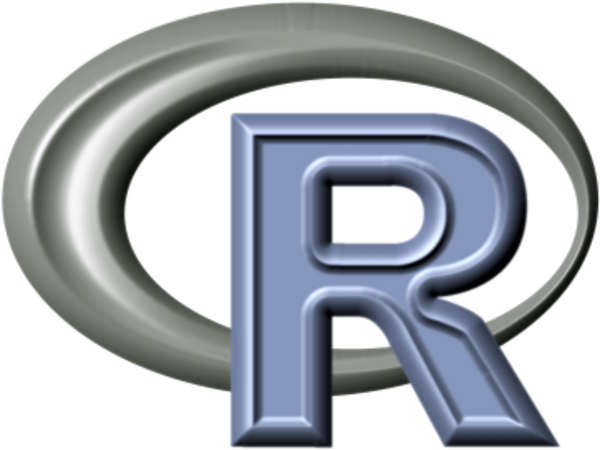

Content
The talk mentions three beneficial things related to base R:
- Stability.
- Dependency.
- Modernity.
Re stability, vanilla R has changed little over time. Code written a couple of decades ago has a high chance of running now and will (likely) be executable for a long time into the future6. As a result, I contend that R is a horseshoe crab (unchanged for aeons, cryptically beautiful). And that R users are Milhouse in this relevant gif (look deep inside yourself, you are Milhouse).
Re dependencies, R’s extensibility is one of its greatest strengths, but reducing the dependency count could help improve reproducibility and reduce headaches7. I used an obligatory (adapted) xkcd comic to illustrate this. Note that base R is the literal, unyielding base of the teetering tower of packages used by your project (incredible metaphor).

Re ‘modernity’, high stability hasn’t stopped base R from also being adapted to meet the expectations of a contemporary coder. R version 4.0 has given us a ‘modern base aesthetic’ (trademark pending) of pipes (|>), lambdas (\()) and string literals (r"{}"). R has morphed, much like the morphing of its janky old logo to the (perhaps already-outdated, lol) contemporary ‘flat’ design of the new logo8?

But wait! A bonus thing:
- ‘Oddity’.
Re oddity, base R has some hidden-gem functions that you can use for serious—or utterly nonserious things—like:
locator()to click a plot and have coordinates returned (e.g. in my experimental {pixeltrix} package for interactive pixel art)readline()to accept user input interactively (e.g. i my experimental {r.oguelike} package for a ‘procedural dungeon-crawler’ in the R console)R_user_dir()as a location for storing user data (e.g. in my experimental {tamRgo} package for a persistent cyber pet in the R console)
Despite all this, base R isn’t perfect for everyone in every situation9. Base flaps sometimes, that’s fine. You can argue it’s more terse and less readable than the verb-driven tidyverse, for example. But we have a duty in the public sector to think about long-term code survival. And high employee turnover rates mean we should perhaps default to the most vanilla tool.
I like base R for writing functions and code I want to live for a long time, for example. I use the tidyverse for everyday data wrangling.
But ultimately, I just wanted to do this terrible ‘base slaps’/‘slap bass’ pun, sorry. But also, I hear that zoomers say ‘slaps’ to mean ‘cool’. I think. Oh dear, this was a flimsy premise for a talk. Cringe-driven development?